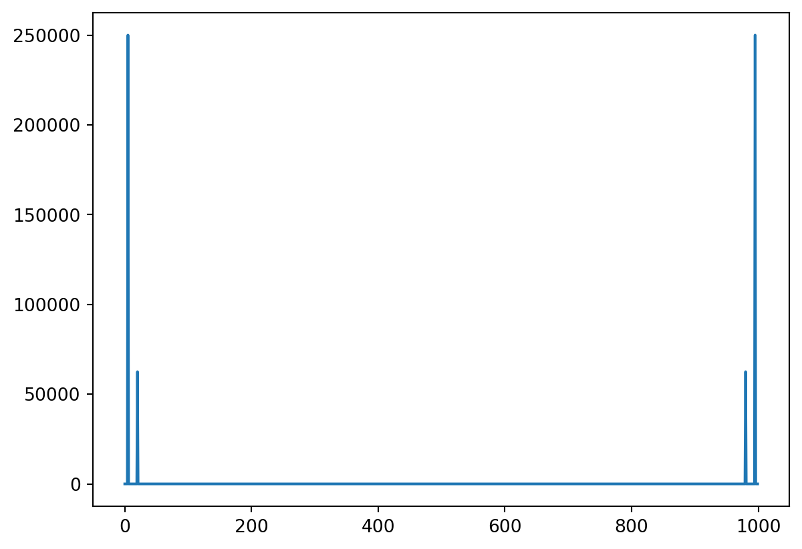
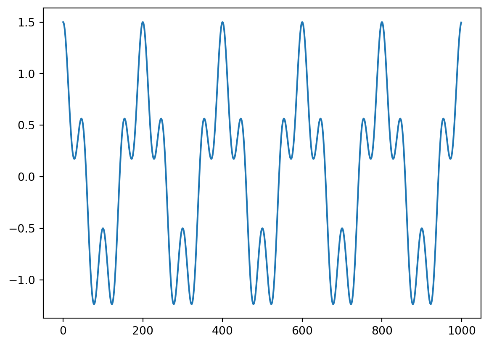
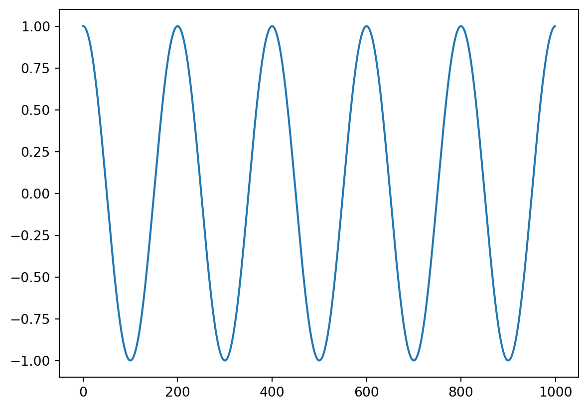
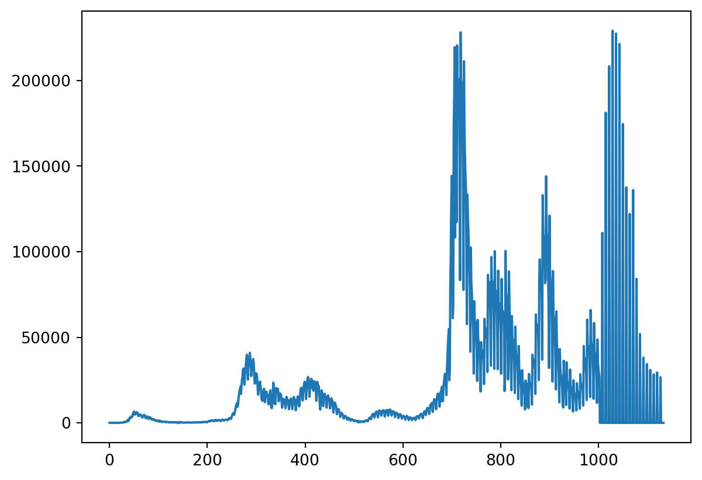
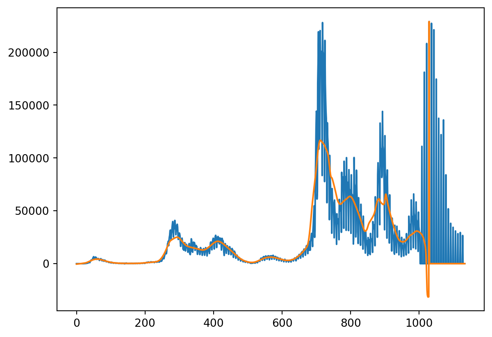
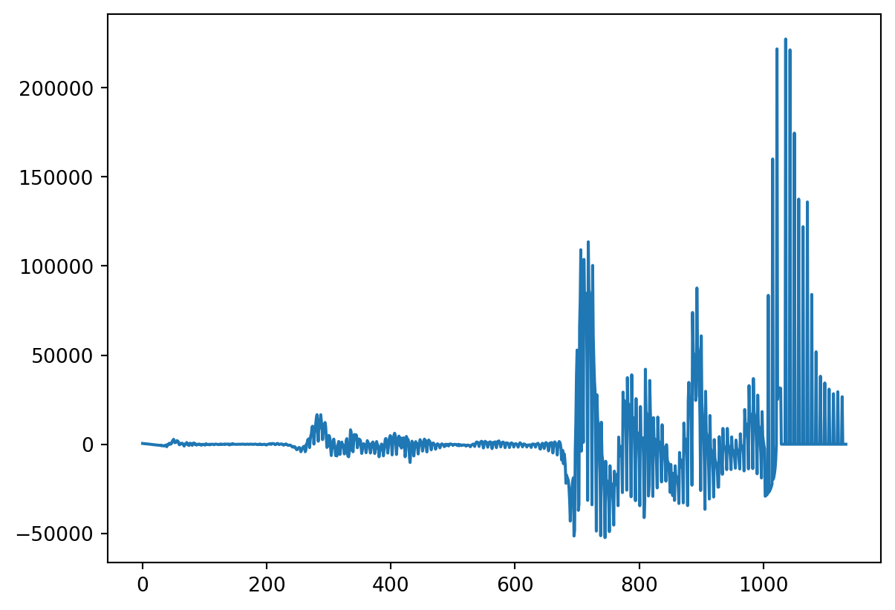
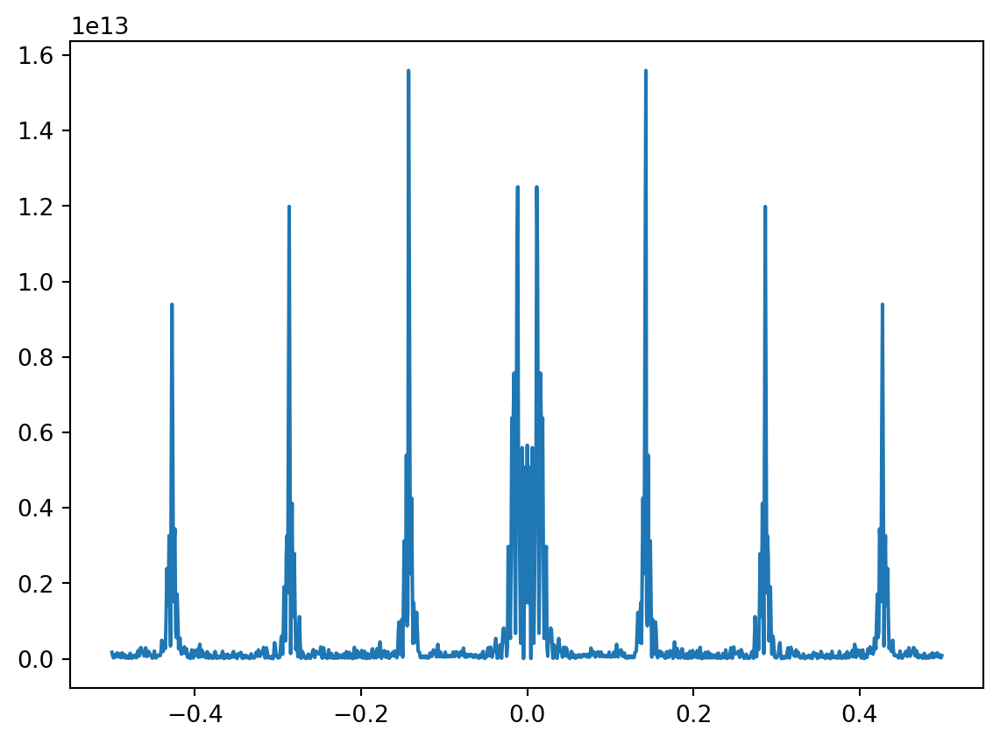

The Fourier transform is one of the key tools in Biomedical Data Science. Its namesake is Jean Baptiste Fourier, who was a 18th century French mathemetician who made fundamental discoveries into harmonic analysis. Its fair to say that Fourier’s discoveries are some of the most fundamental in all of a mathematics and engineering and is the foundation for signal processing.
One of his main discoveries was the Fourier series, the idea that a function can be decomposed into building blocks of trigonometric functions.
31.1.2 Some notation
Let \(<,>\) be a so-called inner product. For example \(<a, b> = \sum_{m=1}^n a_m b_m\) if \(a\) and \(b\) are two vectors. But, \(<a, b>=\int_0^1 a(t)b(t)dt\) if \(a\) and \(b\) are two functions on \([0,1]\). (There is a nice generality between Fourier results on data and Fourier results on functions and other spaces. However, we’ll largely focus on discrete data, so think of the first definition.) We can define the norm as \(<a, a> = ||a||^2\), so that, the distance between two vectors is \(||a-b||\).
Consider a basis, that is a set of vectors, \(b_k\) so that \(||b_k|| = 1\) and \(<b_k, b_j>= I(k=j)\) and the set of vectors, \({\cal H}\), that can be written as \(\sum_{k=1}^k b_k c_k\) for some constants \(c_k\), then for any element \(x\in H\) we have that the best approximation using any subset of the indices, \(S\), is of the form
\[
\sum_{k\in S} b_k <b_k, x>.
\]
For real vectors and the basis we consider, every vector can be written as a sum of the basis elements. You can have weird functions that can’t be written out as sums of the basis elements, but they’re weird functions.
31.2 More practically
The basis we’re interested in is \(b_k\) which has element \(m\) equal to \(e^{-2\pi i m k/n} = \cos(2\pi mk/n) + i \sin (2\pi mk / n)\) for \(k=0,..., n-1\). Here, notice, we quit using the index \(i\) since now it stands for the complex unit. This basis satisfies our rules of \(<b_k, b_j> = I(j=k)\) and having norm 1. So that, given any vector \(x\), our best approximation to it is
\[
F_k = \sum_{m=0}^{n-1} x_m e^{-2\pi i m k / n}
= \sum_{m=0}^{n-1} x_m [\cos(2\pi m k / n) + i \sin(2\pi m k / n)].
\]
The collection of elements, \(F = (F_0, \ldots F_{n-1})\) are called the (discrete) Fourier coeficients and the operation that takes \(x\) and converts it into \(F\) is called the (discrete) Fourier transform.
Let’s consider the case where \(x=(1 ~4 ~9 ~16)'\). So then
import numpy as npimport matplotlib.pyplot as pltx = np.arange(1,5,1) **2t = np.arange(0, 4, 1)n =4F0 = np.sum(x * np.exp(-2*1j* np.pi * t *0/ n))F1 = np.sum(x * np.exp(-2*1j* np.pi * t *1/ n))F2 = np.sum(x * np.exp(-2*1j* np.pi * t *2/ n))F3 = np.sum(x * np.exp(-2*1j* np.pi * t *3/ n))np.round([F0, F1, F2, F3], 3)
array([ 30. +0.j, -8.+12.j, -10. -0.j, -8.-12.j])
F = np.fft.fft(x)F
array([ 30. +0.j, -8.+12.j, -10. +0.j, -8.-12.j])
Let’s give a more realistic example. Consider two cosine waves, one fast, one slow. Let’s add them together and see if the FFT can figure out what we’ve done.
n =1000t = np.arange(0, n, 1)c1 = np.cos(2* np.pi * t *5/ n)c2 = np.cos(2* np.pi * t *20/ n)plt.plot(t, c1)plt.plot(t, c2)plt.show
a = np.fft.fft(x)b = a.real **2+ a.imag **2plt.plot(b)plt.show()np.where(b >1e-5)

(array([ 5, 20, 980, 995]),)
31.2.1 Some notes
We can go backwards from the Fourier coefficients to the signal using the inverse transform. Also, for real signals sometimes people will multiply the signal by \((-1)^t\) in order for the plot of the norm of the coeficients (the power spectrum as its called) to look nicer.
a = np.fft.fft(x)b = np.fft.ifft(a)plt.plot(b)plt.show()
/home/bcaffo/miniconda3/envs/ds4bio/lib/python3.10/site-packages/matplotlib/cbook/__init__.py:1298: ComplexWarning:
Casting complex values to real discards the imaginary part

31.2.2 Filtering
Filtering is the process of allowing certain frequency bands to be retained while others to be discarded. Imagine in our case that we want the low frequency band to pass and to get rid of the higher frequency. In this case we want a low pass filter. There’s a lot of ways to filter signals, but let’s just do it by simple thresholding. The slightly tricky thing about this in practical problems, is making sure that you’re filtering at the frequencies that you want to. As an example, we have 1,000 time points. Say one time point is 1/100 of a second so that we have ten second of data. We have two cosine functions, one that is at 5 oscillations per 10 seconds (0.5 Hz) and one at 20 oscillations per 10 seconds (2 hz). Let’s filter out anything ove 0.5 Hz.
## demonstrating hard filteringa = np.fft.fft(x)n = a.sizetimestep =1/100## a function that shows what the frequencies are in the units you wantw = np.fft.fftfreq(n, timestep)b = ab[(abs(w) >.5)] =0c = np.fft.ifft(b).realplt.plot(c)plt.show()

31.3 Regression and FFTs
Recall regression through the origin. If \(y\) and \(x\) are \(n\)-vectors of the same length, the minimizer of
\[
||y - \beta x ||^2
\]
is \(\hat \beta = <x, y> / ||x||^2\). Note, if \(||x|| = 1\) then the estimate is just \(\hat \beta = <x, y>\). Now consider a second variable, \(w\), such that \(<x, w> = 0\) and \(||w|| = 1\). Consider now the least squares model
\[
||y - \beta x - \gamma w||^2.
\]
We argued that the best estimate for \(\beta\) now first gets rid of \(w\) be regressing it out of \(y\) and \(x\). So, consider that
Or, in other words, if \(x\) and \(w\) are orthogonal then the coefficient estimate for \(x\) with \(w\) included is the same as the coefficient of \(x\) by itself. This extends to more than two regressors.
If you have a collection of \(n\) mutually orthogonal vectors of norm one, they are called an orthonormal basis. For an orthonomal basis, 1. the coefficients are just the inner products between the regressors and the outcome and 2. inclusion or exclusion of other elemenents of the basis doesn’t change a basis elements estimated coefficients.
It’s important to note, that this works quite generally. For example, for complex numbers as well as real. So, for example, consider the possibility that \(x\) is \(e^{-2\pi i m k / n}\) for \(m=0,\ldots, n-1\) for a particular value of \(k\). Vectors like this are orthogonal for different values of \(k\) and all have norm 1. We have already seen that the Fourier coefficient is
\[
f_k = <y, x> = \sum_{m=0}^{n-1} y_m e^{-2\pi i m k / n} =
\sum_{m=0}^{n-1} y_m \cos(-2\pi m k / n) + i \sum_{m=0}^{n-1} y_m \sin(-2\pi m k / n)
\]
where \(y_m\) is element \(m\) of \(y\). Thus, the Fourier coefficients are exactly just least squares coefficients applied in the complex space. Thus we have that
\[
f_k = a_k + i b_k
\]
where \(a_k\) and \(b_k\) are the coefficients from linear models with just the sine and cosine terms. Of course, we don’t actually fit Fourier transforms this way, since there’s a much faster way to do, aptly named the fast Fourier transform (FFT). However, knowing how fast discrete Fourier transforms relate to linear models allows us to use them in creative ways, like putting them into models with other covariates, or in logistic regression models.
Let’s numerically look at FFTs and linear models using covid case counts in Italy as an example.
import pandas as pdimport numpy as npfrom sklearn import linear_modelimport matplotlib.pyplot as pltimport statsmodels.api as sm
dat = pd.read_csv('https://raw.githubusercontent.com/CSSEGISandData/COVID-19/master/csse_covid_19_data/csse_covid_19_time_series/time_series_covid19_confirmed_global.csv')dat.head()
Province/State
Country/Region
Lat
Long
1/22/20
1/23/20
1/24/20
1/25/20
1/26/20
1/27/20
...
2/28/23
3/1/23
3/2/23
3/3/23
3/4/23
3/5/23
3/6/23
3/7/23
3/8/23
3/9/23
0
NaN
Afghanistan
33.93911
67.709953
0
0
0
0
0
0
...
209322
209340
209358
209362
209369
209390
209406
209436
209451
209451
1
NaN
Albania
41.15330
20.168300
0
0
0
0
0
0
...
334391
334408
334408
334427
334427
334427
334427
334427
334443
334457
2
NaN
Algeria
28.03390
1.659600
0
0
0
0
0
0
...
271441
271448
271463
271469
271469
271477
271477
271490
271494
271496
3
NaN
Andorra
42.50630
1.521800
0
0
0
0
0
0
...
47866
47875
47875
47875
47875
47875
47875
47875
47890
47890
4
NaN
Angola
-11.20270
17.873900
0
0
0
0
0
0
...
105255
105277
105277
105277
105277
105277
105277
105277
105288
105288
5 rows × 1147 columns
## Get Italy, drop everyrthing except dates, convert to long (unstack converts to tuple)y=dat[dat['Country/Region'] =='Italy'].drop(["Province/State", "Country/Region", "Lat", "Long"], axis=1).unstack()## convert from tuple to arrayy = np.asarray(y) ## get case counts instead of cumulative countsy = y[1 : y.size] - y[0 : (y.size -1)]## get the first non zero entryy = y[np.min(np.where(y !=0)) : y.size]plt.plot(y)

Let’s look at a smoothed version of it and then take the residual. The residual is where we’d like to look at some oscillatory behavior.
n = y.sizet = np.arange(0, n, 1)lowess = sm.nonparametric.lowessyhat = lowess(y, t, frac=.05,return_sorted=False)plt.plot(y)plt.plot(yhat)

## We're interested in the residuale = y - yhatplt.plot(e)

Let’s manually create our Fourier bases. We’re just going to pick some periods to investigate. We’ll pick a fast varying and slow varying.
## Create 4 elements## Orthonormal basis (note dividing by sqrt(n/2) makes them norm 1)c5 = np.cos(-2* np.pi * t *5/ n ) / np.sqrt(n /2)c20 = np.cos(-2* np.pi * t *20/ n ) / np.sqrt(n /2)s5 = np.sin(-2* np.pi * t *5/ n )/ np.sqrt(n /2)s20 = np.sin(-2* np.pi * t *20/ n ) / np.sqrt(n /2)
Let’s take the FFT, the fast (discrete) Fourier transform th way one would normally do it. First, we use FFT in numpy. Then, there’s a convenient method, fftfreq, which gives the associated frequencies with each element of the transform. Finally, we plot the spectral density, which is the sum of the real and complex Fourier coefficients. Sorting the elements first is necessary to connect the dots on the plot. Interestingly, once we remove the trend from the Italy data, there’s some very noticeable spikes in the spectral density, which implies large coefficients on that specific frequency. This is possibly some reporting issue.
f = np.fft.fft(e)w = np.fft.fftfreq(n)ind = w.argsort()f = f[ind] w = w[ind]plt.plot(w, f.real**2+ f.imag**2)

Now let’s manually find the coefficients using our constructed bases and the formula that the coefficients.